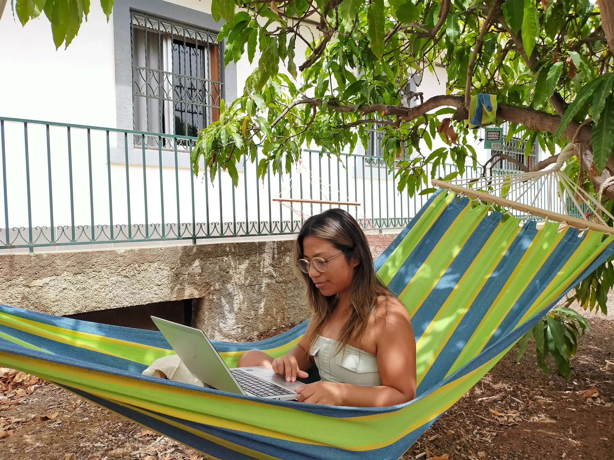
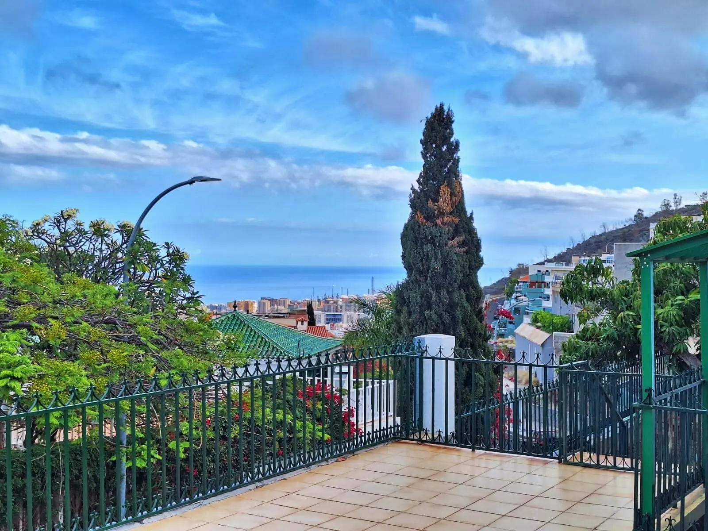
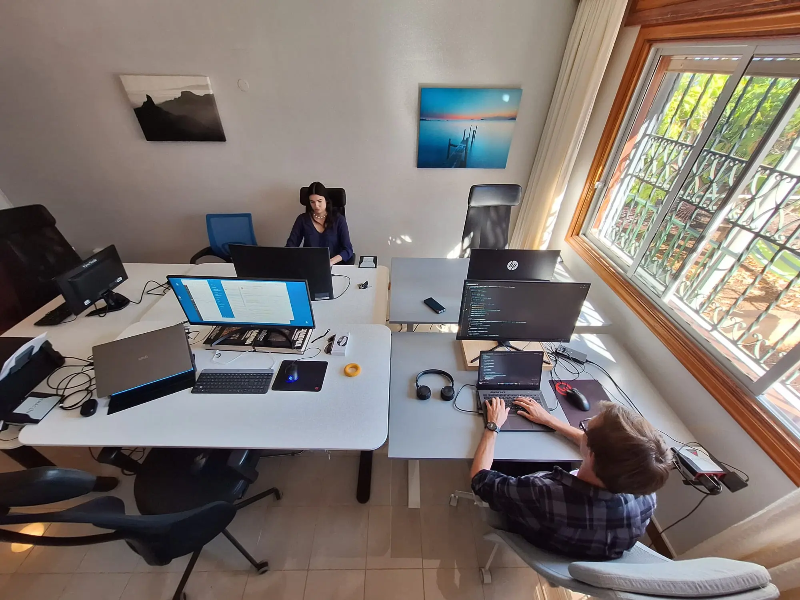
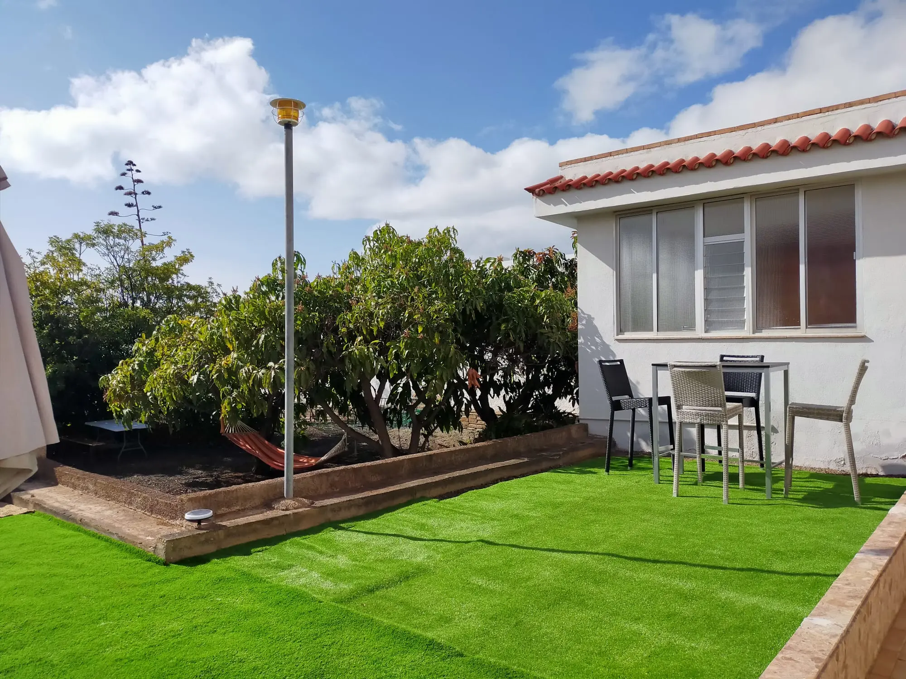
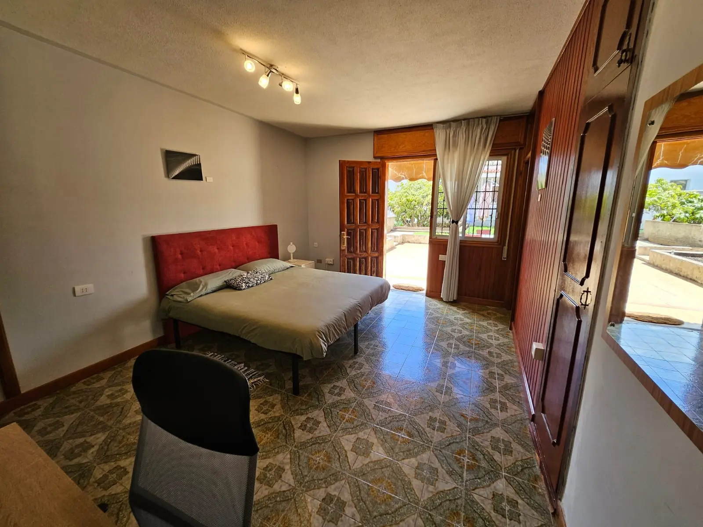
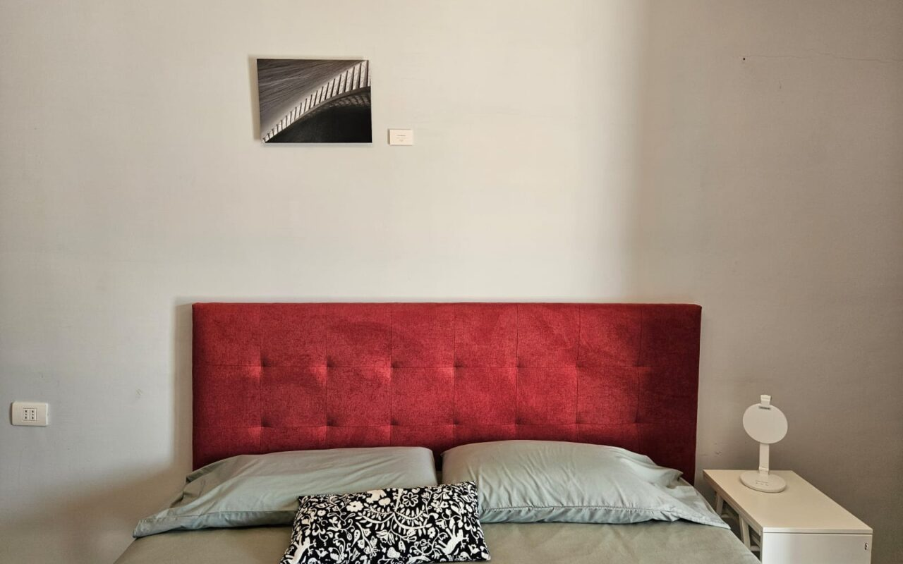
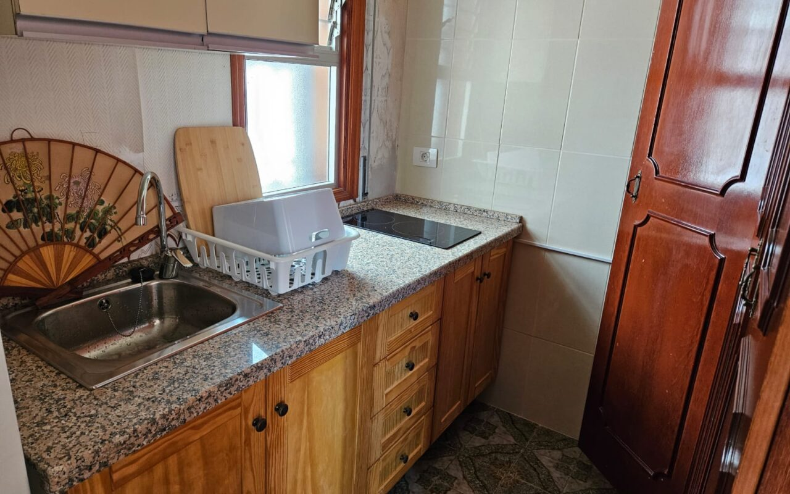
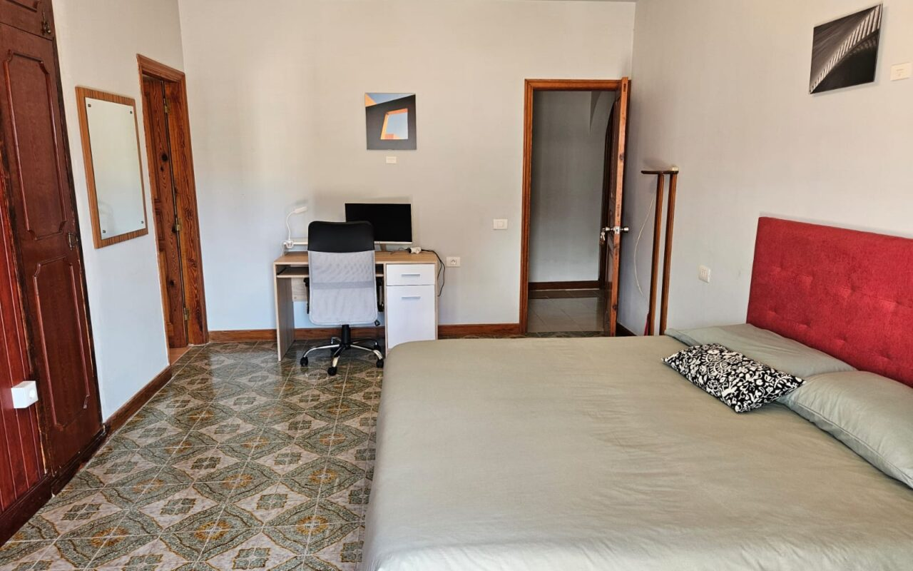
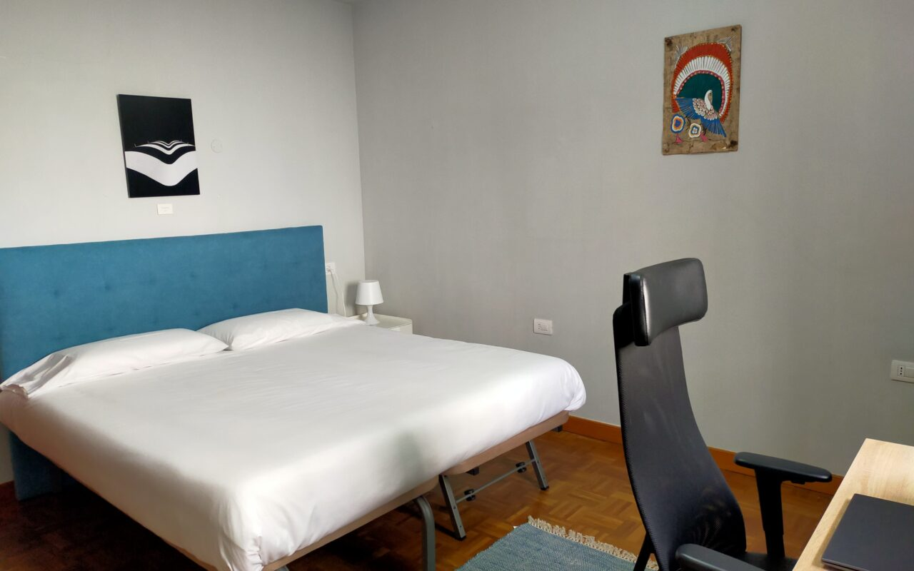
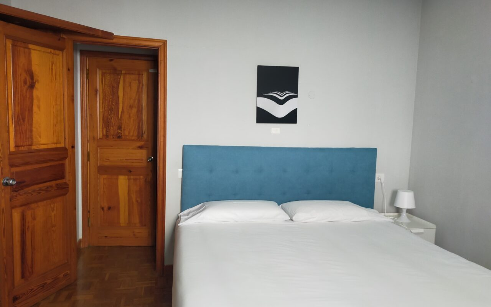
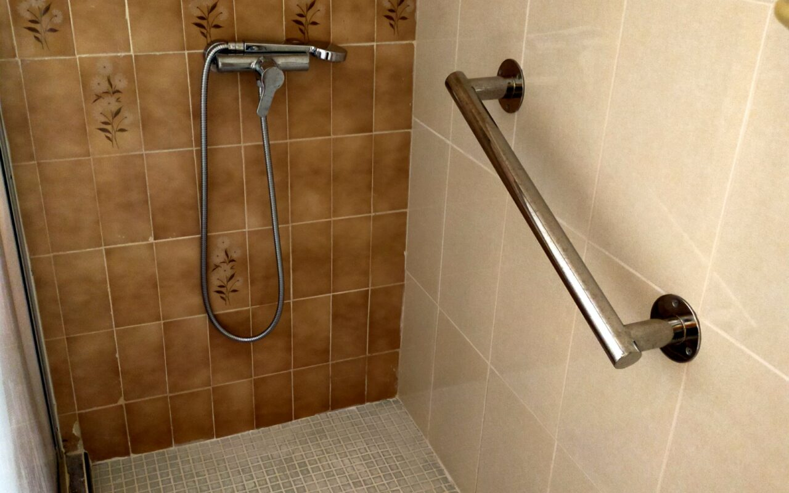
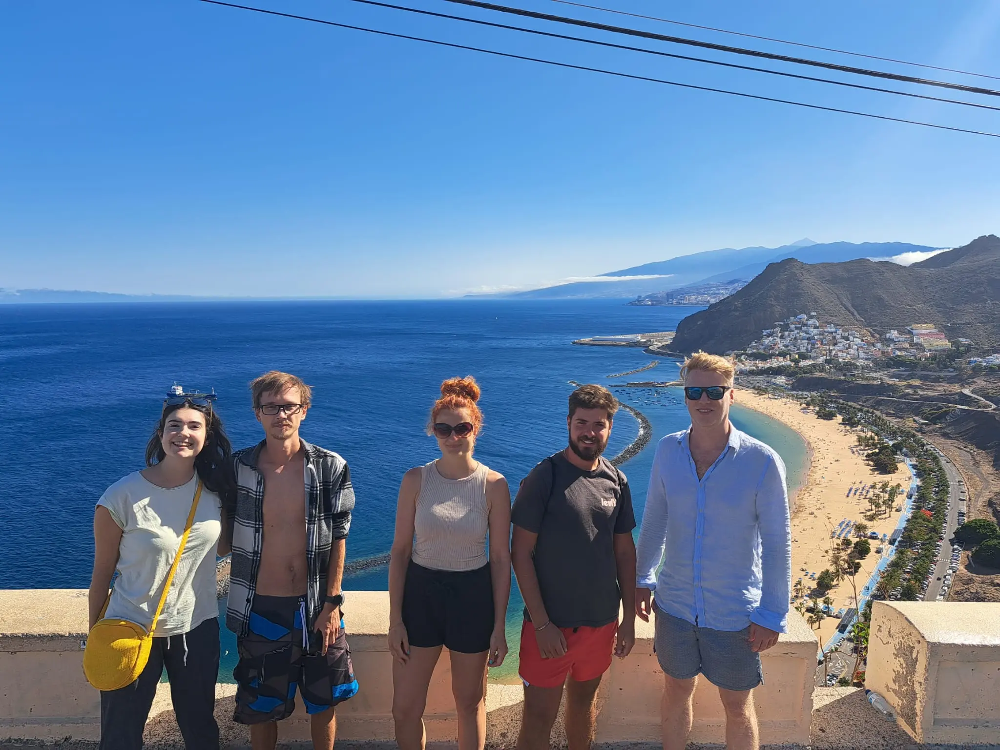
Blue Paradise CLVNG è una casa coliving moderna nel barrio Ifara di Santa Cruz de Tenerife, pensata per nomadi digitali, lavoratori remoti e giovani adulti che cercano una community vibrante in un ambiente sano e organizzato.
Una via di mezzo tra casa privata e ostello smart: stanze accoglienti con nomi tropicali (Banana, Mango, Papaya, Pineapple, Star Fruit, Pitaya, Beetroot Suite), spazio di coworking integrato e regole chiare per garantire qualità di vita.
Verifica disponibilità tramite Lo Squalo o contatta direttamente Blue Paradise
🌐 Visita il sito Blue Paradise